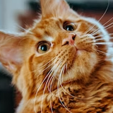
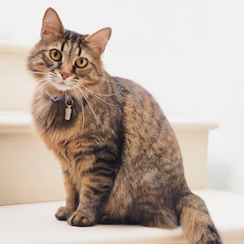
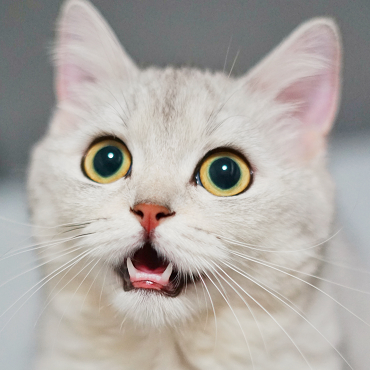
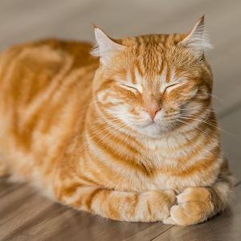

Harry
Harry is a 9-year-old tabby cross who was found wandering the streets. Despite this he absolutely loves a fuss and is quite partial to the Cat Cake!
Bruno
Bruno is a shy fellow who has only joined us recently. He loves to watch you from afar and enjoys the occasional wander round the tables when it is not too busy.

Whiskers
Whiskers is very popular with our guests as she absolutely loves a fuss and is a very talkative madam!

Shira
Shira is a feisty girl who has been a resident for a very long time. She is a sweetheart deep down though and will come say hello to everyone if she can!
Barry
Not much is known about Barry but this beautiful boy is very much a lurker - he will approach to say hello on his own terms, and is a real lovebug when he wants to be!
